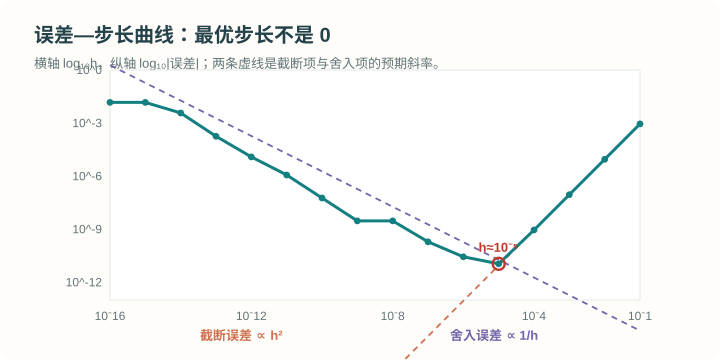

CHAPTER 13 · NUMERICAL ANALYSIS
数值微分：最优步长不是越小越好
前几章我们一直在“用离散逼近连续算子”，大多越细越准。数值微分却相反：缩小步长会同时放大舍入误差，因此存在一个非零的最优步长。本章把这条权衡讲清楚，并给出绕开它的复数步长法。
01 · 为什么微分放大噪声
求积分是“平均”：输入上的扰动在有界区间上被积分平均掉，结果误差量级为 δ·(b−a)。求导是“求极限”：差商要除以步长 h，而分子里两个几乎相等的量相减，会把测量噪声放到分子上再除以一个很小的 h。
设真实信号为 f，测量为 f+η，且 |η|≤δ。中心差分的噪声部分满足
h 越小，噪声被放大得越厉害。这就是数值微分与数值积分在定性上的区别：前者对高频扰动极其敏感，本质上是一个不适定问题——微小的输入扰动可以造成任意大的输出扰动。因此实际使用中要么先滤波，要么改用第 04 节的复数步长法。
02 · 差商格式与误差阶
差商格式都来自 Taylor 展开。将 f(x+h) 与 f(x−h) 在 x 处展开、再做加减，就能得到不同误差阶的公式。前向差分只保留线性项：
后向差分同理。把两式相减，h 的奇次项相消，得到中心差分，误差降为二阶：

x 的对称弦（二阶），更贴紧真实切线。类似地，二阶中心差分 f″(x)≈(f(x+h)−2f(x)+f(x−h))/h² 也是 O(h²)。提高阶数可用更宽的模板，例如四阶中心差分用五个点。
03 · 截断与舍入的平衡：最优步长
中心差分的总误差是两股力量的叠合。截断误差随 h 下降，舍入误差却随 h 上升，因为分子上相减的两个量越来越接近，相对舍入被放大。记机器精度 ε、M=sup|f‴|，则误差的量级为
对 h 求极值，得最优步长
当 |f| 与 M 均为 O(1)、ε≈2.2×10⁻¹⁶ 时，h_opt≈6×10⁻⁶，对应最小误差约 10⁻¹¹ 量级。要点是：最优步长不为零，把 h 取到 10⁻¹⁶ 会得到完全失真的结果。图 2 给出实测的 U 形曲线。

h 偏大时截断项 ∝h² 占主导（橙虚线），h 偏小时舍入项 ∝1/h 占主导（紫虚线）。最优点约在 h≈10⁻⁵。（教学示意，数值由双精度 math.sin 扫描得到。）04 · 复数步长法：绕开相消
把步长取成纯虚数 ih，泰勒展开变为
关键在“虚部”二字：导数直接来自 f(x+ih) 的虚部除以 h，不需要两个大数相减。既然没有相消性损失，h 可以取到 10⁻²⁰ 甚至更小，截断误差 O(h²) 随之趋近于零。代价是：函数必须在路径上解析（全纯），且代码需支持复数运算；含 abs、max、分支判断的函数不能直接使用。
该方法由 Martins 等人在 2003 年系统提出并用于飞行器气动导数计算，之后进入工程与优化库的标准工具箱。
05 · 实验：U 形误差曲线
对 f(x)=sin x 在 x=1 处扫描步长。预期是：中心差分误差先随 h 减小而下降，在 h≈10⁻⁵ 附近触底，然后因舍入反而上升；复数步长法没有相消项，把 h 继续减小时仍能降到机器精度附近。
import cmath, math
x = 1.0
exact = math.cos(x)
def central(f, x, h):
return (f(x + h) - f(x - h)) / (2 * h)
def complex_step(f, x, h): # f(x+ih) 的虚部除以 h
return f(x + 1j * h).imag / h
e5 = abs(central(math.sin, x, 1e-5) - exact) # 接近最优步长
e12 = abs(central(math.sin, x, 1e-12) - exact) # 远小于最优，误差反弹
assert e5 < 1e-10 # 最优点附近误差约 1e-11
assert e12 > 1e-6 and e12 > e5 # 更小的 h 反而更差，非单调
assert abs(complex_step(cmath.sin, x, 1e-100) - exact) < 1e-15 # 无相消
print(e5, e12)断言把“最优步长非零”从一条经验规则变成可检验的事实：存在 h 使误差取最小，且在它的两侧误差都变大。
06 · 失败边界
带噪声数据。(13.1) 说明直接对含噪信号做差商必然放大噪声。此时需要先平滑（如局部拟合 / Savitzky–Golay 类滤波）或正则化，而不能靠减小 h 求精度。
复数步长法的前提。它要求 f 在路径上解析，且代码全程支持复数。含绝对值、分支判断、截断函数的代码会破坏解析性，此时应改回实步长差分并做滤波。
端点与高阶导数。区间端点上没有双侧样本，只能用单侧格式，阶数相应降低；求二阶及以上导数会继续放大误差，精度通常明显低于一阶导数。
原始资料与延伸阅读
本章将文献中的方法与本文独立构造的数值示例严格区分；图示与实验为教学演示。
- NIST DLMF §3.4 · Differentiation：有限差分模板、误差阶与最优步长的基本结果。
- J. R. R. A. Martins, P. Sturdza, J. J. Alonso, The complex-step derivative approximation。ACM TOMS 29(3), 2003；复数步长法及其无相消说明。